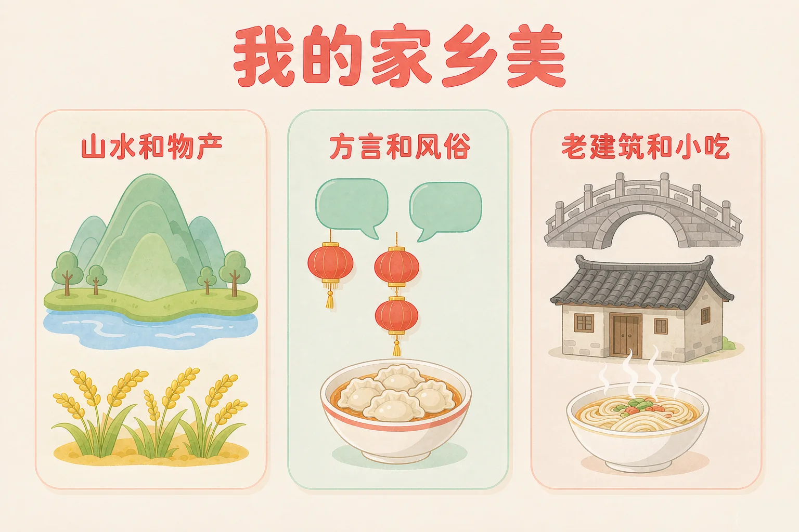
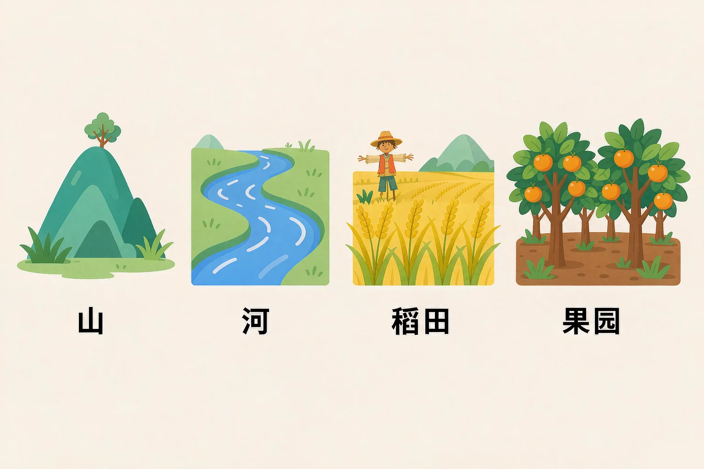
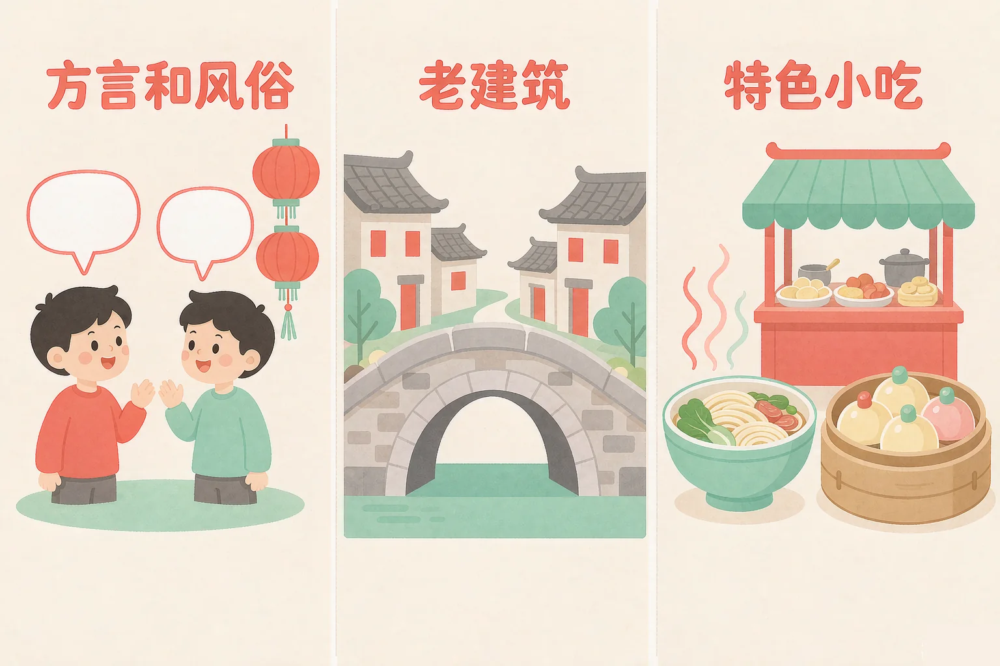

Gallery
v1.0.0 · skill v7.22.0
小学二年级 · 生命安全与健康
天天住在家乡里，可你知道家乡好在哪吗？

选一个你真正想知道的问题，后面的活动都会围着它转。
选择或输入后，这节课会围绕你的问题展开。
先凭直觉选一个，选完立刻看到解释——错了也没关系，正好知道要重点听哪里。
1. 「一方水土养一方人」这句话的意思是：
山里有竹子、水边有鱼虾、平原上有稻米，不同的水土长出不同的东西，也养大了不同地方的人。错因提醒：常见错误是误认为「水土」只是风景——它其实是我们吃的、用的、过日子的来源。
2. 下面哪一样最能让人一听就知道「这是你的家乡」？
别的地方也有马路和房子，但家乡话的口音、老桥老屋的样子、小吃的味道，往往是别的地方没有的。错因提醒：容易误认为「到处都有的东西才是好的」——家乡的特别，恰恰在那些别处没有的东西上。
3. 周末你和小伙伴想去家乡的河边玩，应该怎么做？
水边、山上都要有大人陪着才能去。看着浅的水，底下常常有坑、有石头、有水草，很危险。错因提醒：常见错误是误认为「水浅就没事」——出去玩要跟大人一起，这是一条不能省的规矩。
为什么要学这一课？
我们每天都住在自己的家乡里（And）；可是问起来「你家乡有什么」，很多同学一时说不出（But）；因为家乡的东西太熟悉，熟了反而不留意。这节课我们就一样一样把它找出来（Therefore）。
家乡的地形，就是家乡长什么样：山、河、湖、海、平原、丘陵。地形不一样，长出来的东西就不一样。
家乡的地形
有的地方山多，一层一层叠着；有的是平原，一马平川；有的靠着河、湖、海；有的是丘陵，一起一伏。
家乡的物产
山里有竹子和茶叶，水边有鱼有虾，平原上是一望无际的稻田和麦田，果园里还有梨、橘子和苹果。

有的同学误认为「一方水土养一方人」说的是风景好看。其实这句话说的是过日子：家乡的水浇出家乡的稻米，家乡的山长出家乡的茶，我们吃的穿的，很多都来自脚下这片土地。
🔍 深层理解 换个角度再看一遍这件事，看看能不能说出背后的原理。
看见它：把家乡的地形和物产画成一张小图：一条河、一座山、一片田、一个果园，这就是家乡的「样子」。
解释它：为什么不同的地方长出不同的东西？因为有的地方水多、有的地方日照长、有的地方天冷。地不一样，长出来的东西当然不一样。
迁移它：这套看法到哪里都管用：以后去到别的地方，先看看那里的水土，就能大致猜到那里的人吃什么、做什么。
先写下家乡的名字，再从下面四类里每一类挑一个，点一点，右边的家乡名片就会一样一样长出来。
先把四类都选一选。
家乡除了山水物产，还有很多只有家乡才有的东西。它们凑在一起，就是家乡的味道。

家乡新变化
村里新修了水泥路，镇上有了图书馆，家家户户的日子越过越好。家乡在长大，也在变好。
玩得开心，也要安全
去水边、去山上玩，一定要跟着大人一起去，不一个人往水里跑。看着浅的水，底下常常有坑。
有的同学误认为「老桥老屋又旧又破，没什么用」。其实它们站在那里很多年了，爷爷小时候也在桥上玩过。老东西不是没用，是它们身上有家乡的故事。
🔍 深层理解 换个角度再看一遍这件事，看看能不能说出背后的原理。
看见它：家乡的味道藏在细节里：一句家乡话的口音、过节时桌上那道固定的菜、老墙上被雨水磨出的那道印子。
比较它：把「到处都有的东西」和「只有家乡才有的东西」放在一起比一比，你就知道该向外地朋友介绍什么了。
迁移它：以后去到别的地方，可以先用这套眼光看一看：那里的话怎么讲、节怎么过、房子什么样子、小吃什么味道。
上面是八件家乡里的事物，下面是四句话。先点一件事物，再点它属于哪一句话。
我们配好的家乡
先在上面点一件家乡事物。
情境：班上来了一位新同学，他说他从来没见过你家乡的样子，很想知道。你会怎么向他介绍？请你一步一步想清楚。
有的同学误认为「介绍家乡要说得多、说得大」。其实说得再多，不如说清楚一件别人没听过的小事：比如你家门口那棵老树，或者过节时一定要吃的那道菜。
说给同桌听：如果要你用一句话向外地朋友介绍家乡，你会说哪一句？先在心里说一遍，再说给同桌听。
先凭直觉选一个，选完立刻看到解释——错了也没关系，正好知道要重点听哪里。
1. 关于家乡的物产，下面哪个说法是对的？
物产指的是家乡地里、水里长出来的东西：稻米、茶、果子、鱼虾。错因提醒：常见错误是把「买来的东西」和「长出来的物产」搞混——超市里的东西，很多也是从某个家乡的田里来的。
2. 有同学说：「老桥老屋又旧又破，早该拆掉。」你觉得：
老桥老屋站在那里很多年，爷爷小时候也在上面玩过，它们是家乡的记忆，可以修、可以用，不一定要拆。错因提醒：容易误认为「旧的就是没用的」——用处不只看新旧，还要看它身上有没有故事。
3. 家乡的河水很清，小鱼游来游去。你是村里的孩子，可以怎么做？
河是家乡大家共有的。不丢垃圾，水才一直清；想去玩水，跟着大人一起才安全。错因提醒：有人误认为「水会自己变干净」「水看起来浅就没事」——这两句话都很危险，记住：垃圾带回去，玩水跟大人。
先点一条做法，再点它应该进的筐：爱护家乡的好做法放一边，要调整的做法放另一边。
先在上面点一条做法。
分完之后，想一想：
这两边里，有没有哪一条是你以前做过的？把它记下来，再说一说：从明天开始，你打算为家乡做哪一件小事？
先凭直觉选一个，选完立刻看到解释——错了也没关系，正好知道要重点听哪里。
1. 奶奶用家乡话喊你吃饭，你听不懂，你会：
家乡话是我们这里的人最先学会的话。学着说几句，长辈听着最开心，你也多了一样家乡的东西。错因提醒：常见错误是误认为「家乡话不体面」——每一种话都值得被尊重，家乡话是最亲的那一种。
2. 几位同学约着去家乡的老戏台那边玩，那里紧挨着一个水塘。你会：
水边是最容易出事的地方。先告诉大人、走慢一点，玩起来才安心。错因提醒：有人误认为「人多就安全」——水边不分人多人少，靠得越近越危险。
3. 外地朋友问你家乡有什么好，你说不出来。最该做的是：
家乡的好需要自己去找。问长辈、走一走、看一看，你会发现很多以前没留意的东西。错因提醒：容易误认为「说不出来就是没有」——说不出来，往往只是还没认真看过。
回到开头那个问题：家乡美在哪里？美在山和水，美在方言和小吃，美在老桥老屋，更美在那些一直为家乡做事的人身上。这些加起来，就是「我的家乡美」。
给别人讲一遍：请用「山水、物产、家乡人」这三个词，说清楚你的家乡好在哪，说给同桌听。
三层练习，做完第一、二层就算通关；第三层留给愿意继续探索的同学。
⭐ 基础巩固（必做）
⭐⭐ 能力应用（必做）
⭐⭐⭐ 迁移挑战（选做）
左边是学它之前要先会的，右边是学会之后可以继续探索的，下面是同一领域的伙伴知识。
图谱正在加载：首次进入需下载知识索引（约 1–3 秒），加载完成后本行会自动消失。